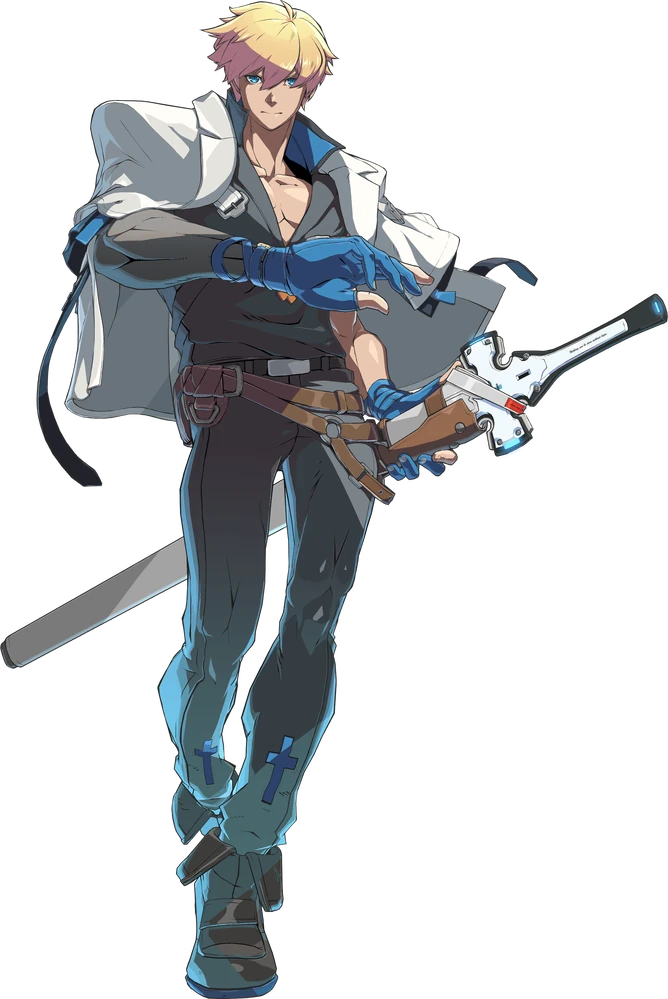

Ky Kiske
A classic all-rounder with excellent moves.
A serious man who dedicates himself completely to his work, the people, and his morals.
His love for justice and determination to help those less fortunate is reflected in all aspects of his life.
On the other hand, this also means he can show rather extreme dislike for anything that disrupts the peace or breaks the rules.
After taking his position as King, this enthusiasm shifted into a broader perspective, allowing him to see the world from a variety of viewpoints.
This isn't to say, however, that he can't still come off as naïve and emotional at times.
